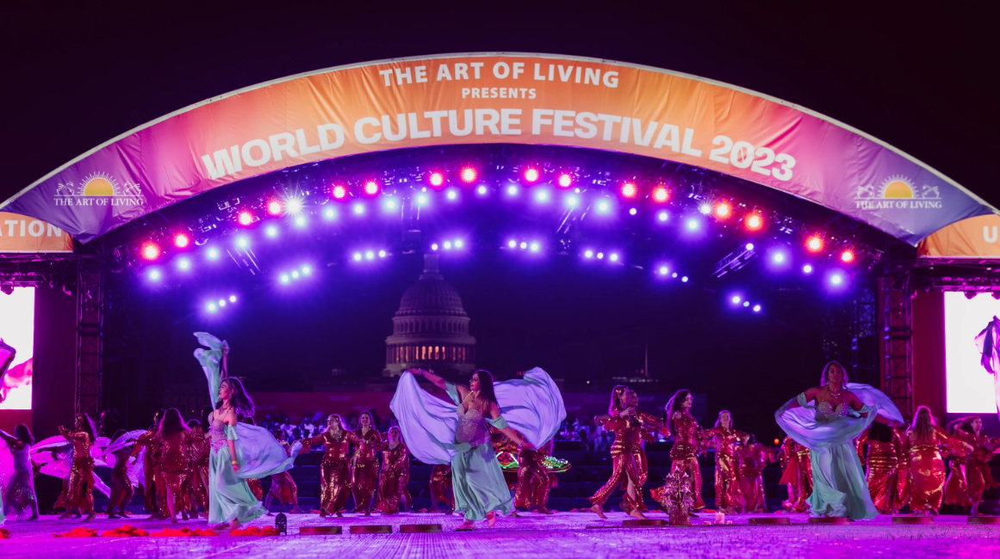

Global
World Cultural Festival

Image Source
Description
The World Culture Festival, organized by The Art of Living Foundation, is a vibrant and inclusive celebration that brings together people from diverse cultural backgrounds around the globe. This grand event serves as a platform for fostering unity, promoting peace, and celebrating the rich tapestry of global cultures.
The festival is characterized by its colossal scale, featuring an array of mesmerizing performances, cultural displays, art exhibitions, and interactive activities. Held in a massive open-air venue, the festival attracts thousands of participants, artists, musicians, dancers, and volunteers from various corners of the world.
Throughout the event, attendees are treated to a kaleidoscope of cultural showcases that highlight traditional music, dance, cuisine, art, and rituals from different countries and ethnicities. It's a melting pot of traditions where visitors can immerse themselves in the sights, sounds, and flavors of diverse cultures, fostering mutual understanding and appreciation.
One of the distinctive aspects of the World Culture Festival is its emphasis on fostering harmony and peace among people of different backgrounds. Spiritual leaders, social visionaries, and thought leaders often grace the event, sharing their wisdom and insights on fostering global unity and understanding.
Workshops, seminars, and discussions on topics such as intercultural dialogue, sustainable living, and holistic wellness are also an integral part of the festival. Participants have the opportunity to engage in meaningful conversations, exchange ideas, and learn from each other's experiences, promoting a sense of interconnectedness and shared humanity.
The festival's ambiance is one of joy, celebration, and mutual respect. It serves as a testament to the belief that despite cultural differences, there exists a universal thread that unites us all. The World Culture Festival by The Art of Living Foundation stands as a testament to the power of cultural diversity in fostering peace, understanding, and a shared sense of belonging on a global scale.
Videos